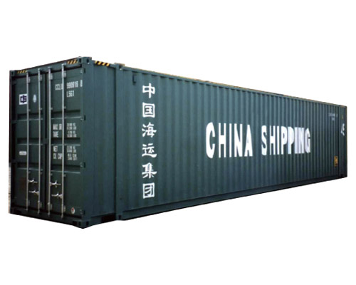

АЛЕКСАНДРИЯ
Общество
с ограниченной ответственностью
Москва, ул.
Авиамоторная, д.50, корп.2, пом.XIV, офис 56,
тел.+7 926 0755351
ПОСТАВКА
ТОВАРОВ ИЗ КИТАЯ
Особенностью
нашей действительности является
глобализация, приводящая к размыванию
государственных и географических границ
между странами и укреплению социокультурного
взаимодействия.
Залогом
успешного экономического развития
государств является развитие своей
инфраструктуры:
·дорог,
·средств
связи,
·модернизация
транспортных средств и т д.
Развитие
инфраструктуры обязательно приводит
к росту потребления стройматериалов,
и как следствию, развития отрасли.
Результаты
глобализации
Зачастую
темпы развития обществ настолько высоки,
что страны не в состоянии самостоятельно
поддерживать обеспечение необходимым
количеством материалов и ресурсов.
Китай в современном мире выступает
производственной базой и фабрикой
всепланетного масштаба.. Оптимальным
вариантом становиться решение
импортировать стройматериалы
из Китая.
Ценовое преимущество, сочетающееся с
достойным качеством, все более и более
укрепляют позиции Китая на международном
рынке стройматериалов.
На сегодняшний день Китай является наиболее крупным экспортером строительных материалов. Экспортом из Поднебесной обеспечивается:
·60% мировой
потребности в строительном камне,
листовом стекле и стекловолокне;
·30%
потребности в цементе и цементном
клинкере.
Экспорт
строительных материалов производится
КНР более чем в 100 стран мира. Причем их
средние экспортные цены в 2-3 раза ниже,
чем на
аналогичную линейку товаров в развитых
странах.
Без стройматериалов
родом из Китая не обходится строительная
промышленность таких стран:
·США,
·Европы,
·Африканских
стран.
Среди поставляемых материалов
находятся:
·покрытия
для пола,
·цемент,
·фанера,
·керамическая
плитка,
·оконное стекло,
·черепица.
Российский
рынок далеко не исключение из этого
списка. Отечественные производители
не могут обеспечить быстро растущие
объемы капитального строительства
качественными стройматериалами. Более
80% российского импорта строительных
материалов обеспечивается китайскими
производителями. Поставляемые
материалы 
обладают не только прекрасным
качеством, но и более широким цветовым
рядом и специализированным подходом к
их производству.
Ведущие компании
Поставка
стройматериалов из Китая обеспечивается,
по-преимуществу, десятью крупнейшими
компаниями. China
National Materials Group Corporation — SINOMA. Компания
была создана в 1983году. Она является
центральным государственным предприятием
Китая и непосредственно управляется
административной комиссией по контролю
за государственной собственностью,
созданной при Госсовете КНР. SINOMA
производит:стекловолоконную продукцию,
промышленную керамику, цемент, новые
настенные покрытия и материалы,
искусственные кристаллы, составные
материалы. Корпорация обладает передовыми
разработками и технологиями в производстве
вышеперечисленных материалов, а также
глубокими технологиями разработки
неметаллических полезных ископаемых.
Корпорация владеет 96 предприятиями, 13
национальными исследовательскими
проектными институтами, 26 академиями
технического геологического разведывания.
Дочки SINOMA располагаются в США, Японии,
на Ближнем Востоке и в Африке.
·Anhui Conch Cement Company Limited — была зарегистрирован Гонконгской Фондовой Биржей в 1997 году. Эта компания — крупнейший китайский производитель цемента. Акции Конч Цемент продаются за рубежом. Наиболее популярными товарами этой компании являются клинкер и высококачественный цемент, который широко использовался в таких нашумевших проектах как «Жемчужина» (шанхайская телевизионная башня). Компания участвовала в строительстве Тяньваньской АЭС, международного аэропорта Пудун, моста Хайцан и моста над заливом Ханжоу. Она экспортирует свою продукцию в 20 стран мира. Конч Цемент имеет 17 заводов, производящих клинкер, 21 предприятие по производству цемента в 9 провинциях на Юге и Востоке Китая. Конч Цемент за последние годы построила и ввела в эксплуатацию 3 новые линии по сухой обработке клинкера.
·China
National Bilding Materials Group Corporation (CNBM) –
является крупнейшим
производителем цемента, новых строительных
материалов и строительного стекла.
·
-
BBMG Group Co LTD – производит цемент высокого
качества, а также строительную керамику.
·Shandong
SunssyGroup – является
производителем цемента высокого
качества, цементных листов и новых
стеновых материалов.
Разделение
по территориальному принципу
Китай
можно образно разделить на несколько
участков по производству стройматериалов.
Северные провинции традиционно занимаются
производством изделий из черных
металлов:
труб,
·металлопроката,
·арматуры,
·электродов.
Восточные
провинции, такие как Чжецзян,
изготавливают отделочные материалы:
·утеплители,
·алюминиевые
композитные панели,
·гипсокартон,
·ламинат,
·пластик,
·изделия из
ПВХ,
·минеральная вата.
Южные
провинции, такие как Гуандун, занимаются
производством:
·сантехники,
·керамической
плитки,
·керамогранита.
Считается, что основными производителями
стройматериалов Китае являются свободные
экономические зоны, в которых четко
налажены процессы первичного производства
и первичной технической разработки на
высокотехнологичном оборудовании.
Но имеют место такие исключения, такие
как кустарное производство.
Результаты
роста строительной промышленности
Начиная
с 2005года, китайская строительная
промышленность переживает этап бурного
роста. Даже стремительный рост спроса
на строительные материалы на внутренних
рынках Китая не мешают Поднебесной
экспортировать большую часть строительных
материалов. Китайский строительный
рынок опирается в своем развитии на
химическую и электронную промышленность,
позволяющую создавать новые строительные
материалы.Заказывая стройматериалы
из Китая оптом,
знайте, что основное производство
строительных материалов ориентируется
на экологически чистые, сберегающие
энергию как при производстве, так и в
использовании, материалы.


Москва,
ул.Авиамоторная, д.50, корп.2, пом.XIV,офис
56,
тел.+7 926 0755351 ЗВОНИТЕ!